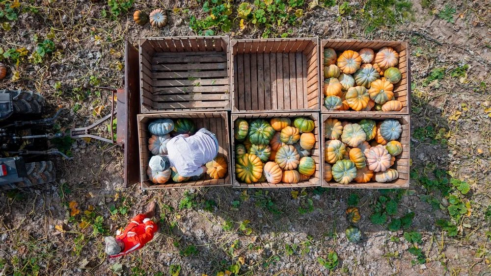
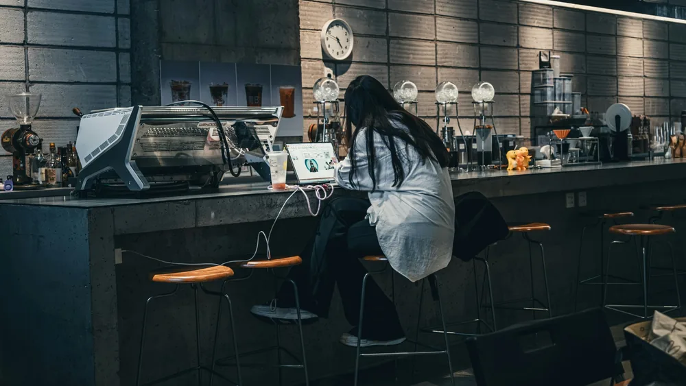
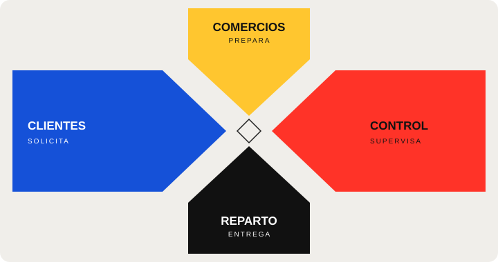

PROVEEDORES
Productos y abastecimiento para los negocios.
 DESSET
DESSET
DESSET integra una visión de comercio digital y coordinación logística, con servicios de última milla.
Soluciones digitales para negocios y clientes.
Tecnología para conectar y coordinar servicios.
Gestión de entregas y última milla.
Paquetería, transporte y coordinación de cargas.

Productos y abastecimiento para los negocios.

Canales de venta, gestión de pedidos y acceso a clientes.

Acceso a productos, negocios y servicios.

Recogida, transporte y distribución de mercancías.
Comercio digital, pedidos y entregas de última milla.
Paquetería, transporte y distribución de mercancías.
FROM HUB TO DOOR fulfillment, dispatch, and last-mile delivery working as one system.
Representación conceptual de un centro logístico. Los camiones y los indicadores son simulaciones. No corresponde a pedidos ni entregas activas.

Exploración de negocios, opciones y solicitudes desde la aplicación de clientes.
Organización de solicitudes, preparación y relación con sus clientes.
Coordinación de rutas y movimiento de pedidos dentro del modelo de última milla.
Herramientas de supervisión y trazabilidad en el ecosistema.
Conecta tu negocio con más clientes a través de DESSET.
Más informaciónConoce cómo formar parte de nuestra red de reparto.
Más informaciónConoce los perfiles de DESSET, su identidad y las novedades del ecosistema. Los canales de la marca reúnen la comunicación institucional.
Sitio institucional: los pedidos y pagos corresponden a las aplicaciones DESSET cuando estén habilitadas. Esta web no procesa transacciones.